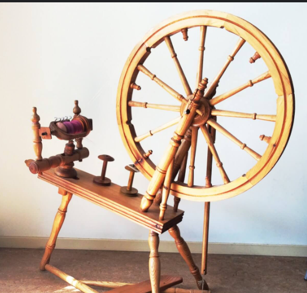

About
Life is like a spinning wheel.
Aidan is currently pursuing a PhD in Environmental Science and Engineering from Harvard University under Professor Kaighin McColl. Aidan's research interests are in ecohydrology and land-plant-atmosphere interactions. He graduated Summa Cum Laude from Princeton University with a Bachelors in Civil and Environmental Engineering. In his spare time he enjoys writing about himself in the third person and designing amateurish websites.
Research
Environmental Modeling
Land-Atmosphere Interactions
Publications
Tutoring
Aidan has several years of tutoring and mentoring experience for a variety of STEM topics. He was a tutor for two years at the McGraw Center for teaching and learning at Princeton University where he taught multivariable calculus, physics, and data analysis in R. Aidan enjoys teaching math and science at all levels (up to his own limit of knowledge?). He is also available for SAT/ACT prep and general college/graduate school advice. If you are interested please email at amatthews@g.harvard.edu.